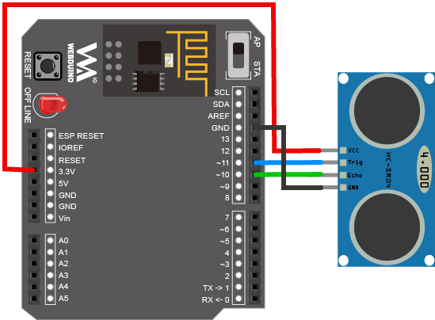
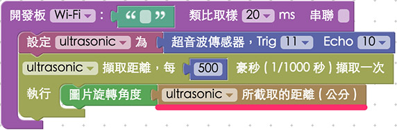

教學範例 6：超音波傳感器改變圖片大小
在 上一個範例 我們了解了超音波傳感器的運作原理，在這個範例就來做點應用，藉由超音波傳感器回傳的公分數值，對應到網頁裡頭圖片的寬度，就可以非常輕鬆地做出一個利用超音波傳感器控制圖片大小的實例囉。
範例影片展示
影片對應範例：https://blockly.webduino.io/?page=tutorials/ultrasonic-2
接線與實作
和上一個範例完全一樣，只要把超音波傳感器的 VCC 接在 3.3v，Trig 接在 11，Echo 接在 10，GND 就接在 GND 的腳位，你可以用麵包板接出來，也可以直接就把超音波傳感器跟 Webduino 開發板組合即可。
馬克一號接線示意圖：

Fly 接線示意圖：

實際接線照片：

Webduino Blockly 操作解析
打開 Webduino Blockly 編輯工具 ( https://blockly.webduino.io )，因為這個範例會用網頁「控制圖片」來對圖片做放大縮小或旋轉的控制，所以要先點選右上方「網頁互動測試」的按鈕，打開內嵌測試的網頁，用下拉選單選擇「控制圖片」，就會出現一張圖片，我們會將超音波所測得的距離來控制這張圖片。

把開發板放到編輯畫面裡，填入對應的 Webduino 開發板名稱，開發板內放入超音波積木，名稱設定為 ultrasonic，腳位設定為 Trig 11，Echi 10，接著放入每 500 毫秒偵測一次的積木，接著把左側網頁互動裡，控制圖片角度的積木擺放進去，讓圖片旋轉的角度就是超音波偵測到的距離。( 可以把原本的數值 0 刪除，放入偵測到的距離 )

或是你也可以用超音波的數值設定為圖片的長寬。

如果不想按照 1:1 的比例，也可以用數學式來計算長寬。

完成後，確認開發板上線 ( 點選「檢查連線狀態」查詢 )，點選紅色的執行按鈕，用手或是遮蔽物在超音波傳感器前後晃動，就會看到圖片開始旋轉或是大小開始改變了。 ( 解答：https://blockly.webduino.io/#-K5LUv3-l1992A51-gX4 )
程式碼解析 ( 完整程式碼、檢查連線狀態 )
HTML 的 header 引入 webduino-all.min.js，目的在讓瀏覽器可以支援 WebComponents 以及 Webduino 所有的元件，如果是用 Blockly 編輯工具產生的程式碼，則要額外引入 webduino-blockly.js。
<script src="https://webduino.io/components/webduino-js/dist/webduino-all.min.js"></script>
<script src="https://webduinoio.github.io/webduino-blockly/webduino-blockly.js"></script>
HTML 裡就是一張圖片，放在一個 div 裡頭，圖片和 div 分別都有 id 方便我們去控制。
<div id="demo-area-03-container">
<img src="https://blockly.webduino.io/media/webduino-logo.jpg" id="demo-area-03-image">
</div>
CSS 在外面的 div 設定了長寬，比較需要注意的是 position: relative;，當我們這樣設定，內部的圖片位置設定為 position: absolute，就可以由 div 的位置出發，透過 top 和 left 來設定圖片位置，然後這裏也用了 transform-origin 來定義圖片的中心點，並且加上 transition 來設定圖片漸變的時間，這裏設定為 0.3 秒。
#demo-area-03-container {
position: relative;
width: 150px;
height: 150px;
}
#demo-area-03-image {
position: absolute;
top: 0;
left: 0;
width: 150px;
height: 150px;
transition: .3s;
-webkit-transition: .3s;
-moz-transition: .3s;
transform-origin: 75px 75px;
-webkit-transform-origin: 75px 75px;
-moz-transform-origin: 75px 75px;
}
javascript 寫起來還滿容易的，就只是把 ping 所回傳的公分數，轉換為圖片的大小，純粹就是一些格式大小的運算，如果要將其簡化。
var ultrasonic;
boardReady('', function (board) {
board.samplingInterval = 20;
ultrasonic = getUltrasonic(board, 11, 10);
ultrasonic.ping(function(cm){
console.log(ultrasonic.distance);
var imageWidth = ultrasonic.distance;
var imageHeight = (ultrasonic.distance * 1.5);
document.getElementById("demo-area-03-image").style.width = imageWidth+"px";
document.getElementById("demo-area-03-image").style.height = imageHeight+"px";
}, 500);
});
以上就是利用超音波傳感器，偵測並用距離來改變圖片大小或角度的範例。
完整程式碼：http://bin.webduino.io/jufiq/edit?html,css,js,output
解答：https://blockly.webduino.io/#-K5LUv3-l1992A51-gX4
超音波傳感器的延伸教學：
Webduino Blockly 課程 3-2：超音波傳感器改變圖片大小
Webduino Blockly 課程 3-3：超音波傳感器改變音量大小
如果您還想了解更多，可以參考：
2. Blockly 教學：https://goo.gl/Y8sRkl
3. 產品總覽：https://webduino.io/buy.html
4. 露天賣場：http://goo.gl/0Dj9ip